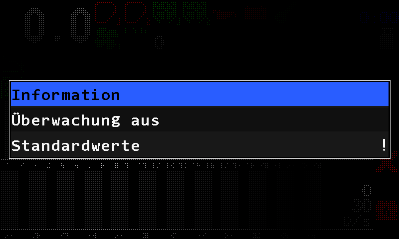
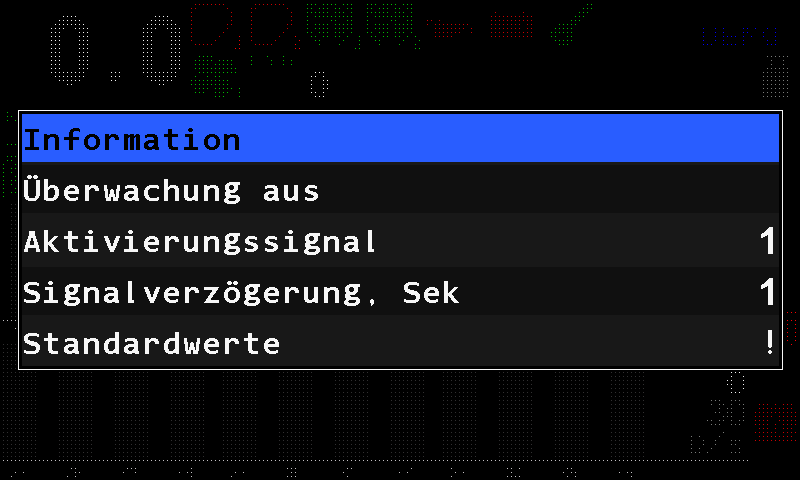

Behälter-, Arbeitsstellungs- und Motorsensoren
Die Einstellungen der Zwei-Zustands-Sensoren – Behälterfüllstand, Arbeitsstellung des Geräts und die fünf Motorsensoren des Traktors.
Diese Sensoren melden einen von zwei Zuständen und nichts weiter. Öffnen Sie das Kontextmenü eines beliebigen von ihnen wie in Sensoreinstellungen. Ihr Statusbildschirm zeigt Pin: und den Pegel am Eingang, „0“ oder „1“.
Behältersensor
Der Behältersensor hat keine eigenen Parameter – sein Kontextmenü enthält nur die drei gemeinsamen Punkte.

Alarm: Behälter leer.
Arbeitsstellungssensor
Der Arbeitsstellungssensor teilt dem Panel mit, ob das Gerät zur Arbeit abgesenkt oder zum Transport angehoben ist. Der Statusbildschirm zeigt Position: Arbeit oder Position: Transport.

| Parameter | Was er bewirkt | Bereich | Ebene |
|---|---|---|---|
| „Signal Transportstellung“ | Welcher Zustand des Eingangs die Transportstellung bedeutet. | 0 / 1 | Agronom |
Das Menü kann zusätzlich „Alarmkriterium“ enthalten („Ja“ / „Nein“, Ebene „Agronom“): Bei „Ja“, dem Standardwert, werden die Alarme der Korn-, Dünger- und Dosierwellensensoren nicht ausgelöst, solange das Gerät in Transportstellung ist; an Maschinen mit Dosiermotoren oder einem Pumpencontroller für Flüssigdünger ist der Punkt ausgeblendet und immer „Ja“.
Motorsensoren
„Batterie lädt nicht“, „Öldruck-Störung“, „Zündung“, „Wenig Kraftstoff“ und „Luftfilter“ sind fünf getrennte Eingänge, die im Profil jeweils einzeln eingeschaltet werden (Das Profil).

| Parameter | Was er bewirkt | Ebene |
|---|---|---|
| „Aktivierungssignal“ | Welcher Zustand des Eingangs derjenige ist, der gemeldet werden soll. | Agronom |
| „Signalverzögerung, Sek“ | Wie lange dieser Zustand anliegen muss, bevor er zählt. Standardwerte: 15 s für den Kraftstoffstand, 5 s für den Luftfilter. | Agronom |
Alarme: Alarme des Traktormotors.
Ihre Maschine tut etwas, das diese Seite nicht beantwortet? Schreiben Sie an support@agriwelt.com — es antwortet ein Ingenieur.